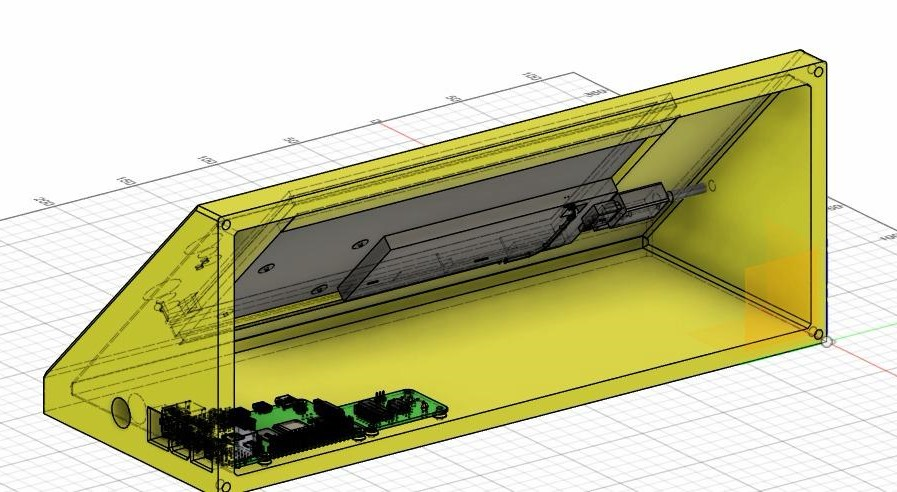
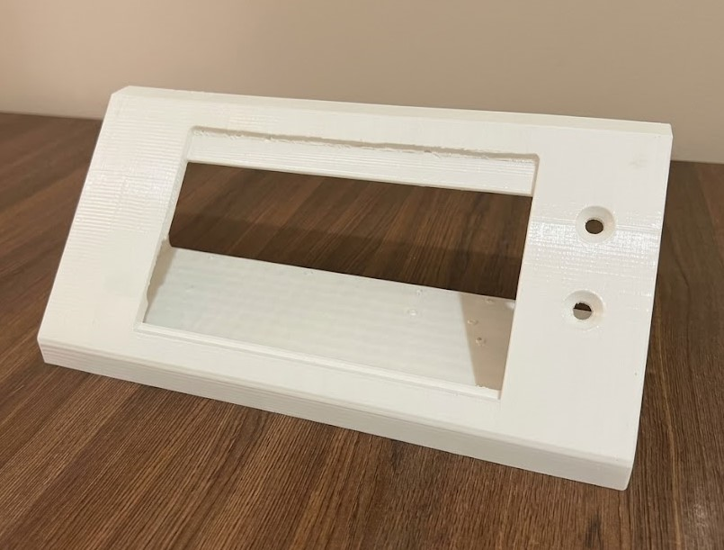
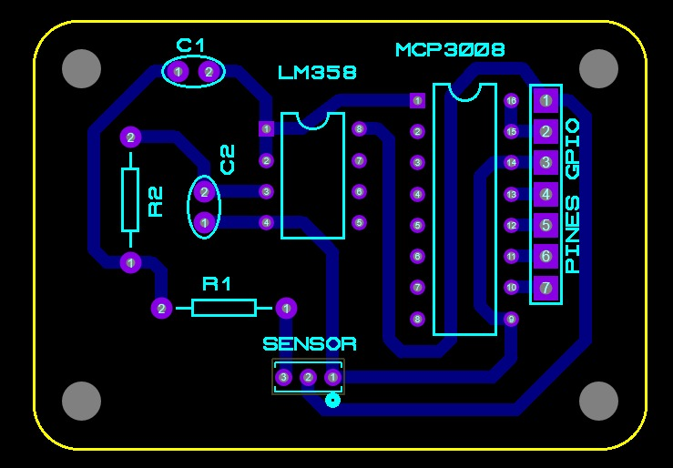
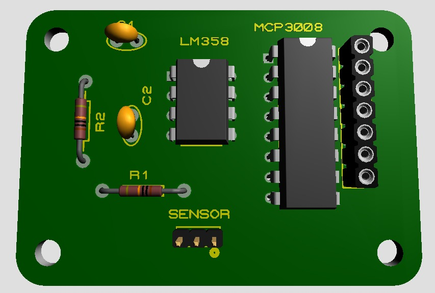

ASISTENTE PARA DIAGNÓSTICO MÉDICO CON INTELIGENCIA ARTIFICIAL
Resumen del proyecto
Las salas de emergencia de los hospitales públicos de Bolivia tiende a saturarse. Un sistema de salud fragil, largas filas, alta demanda de atención y lescasez de personal generan inconvenientes en el tratamiento de los pacientes.
El presente proyecto tiene como objetivo el desarrollo de un asistente para optimizar la atención mediante inteligencia artificial realiza diagnósticos médicos en base a información que proveen los pacientes.
Tecnologías utilizadas
- Raspberry Pi
- Python
- Proteus
- Fusion 360
- Tkinter
- SQLite
- Electrónica analógica y digital
Diseño 3D y Estructura
El modelado se realizo usando Fusion 360. Se tomo en cuenta la ergonomía, facilidad de ensamblaje y dimensiones de los componentes electrónicos internos. Una vez finalizado el diseño, se imprimió en 3D usando filamento ABS, debido a su resistencia y durabilidad. Por ultimo, se realizaron pruebas de ensamblaje y ajustes finales para asegurar un encaje perfecto de todos los componentes.


Placa Electrónica y Circuitos
El diseño esquemático y PCB se realizaron con el software Proteus. Se realizó una previa selección de componentes de sensado, adaptación de señal, microcontroladores y etapas de filtrado para una lectura precisa de los datos. Se evaluó y se acondicionó el circuito para que funcione y se integre de la forma mas óptima al sistema.


Componentes seleccionados
Se seleccionó los componentes necesarios para un correcto y acertado funcionamiento del sistema. Tambien se tomo en cuenta la compatibilidad para el cableado interno y montaje de los mismos dentro del prototipo. Dentro de esos componentes resaltan: sensor de temperatura, de ritmo cardiaco, Raspberry Pi, convertidor analogico-digital, filtro de señal y la pantalla de visualización.